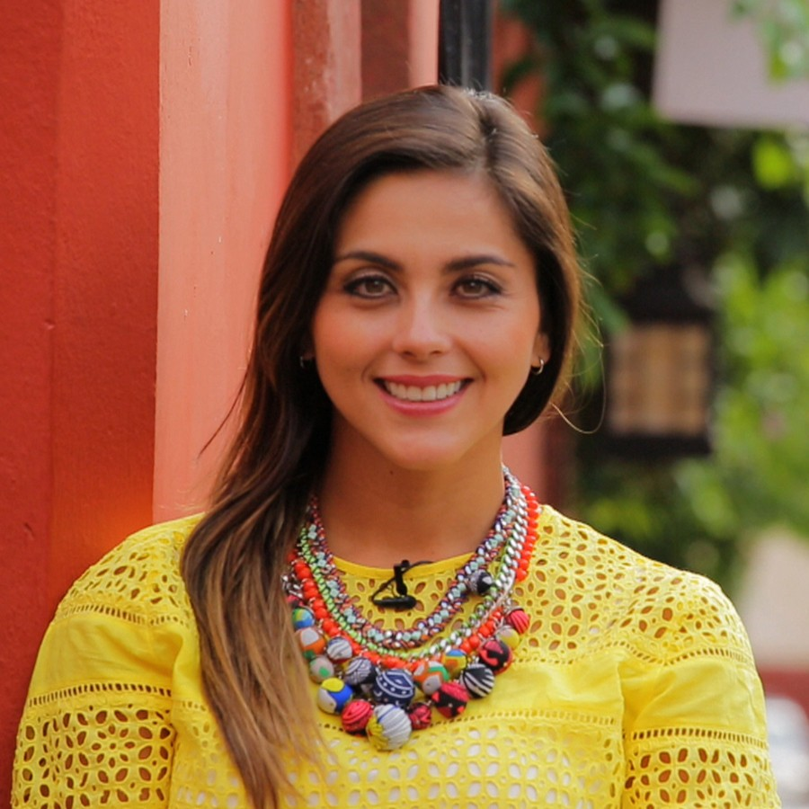
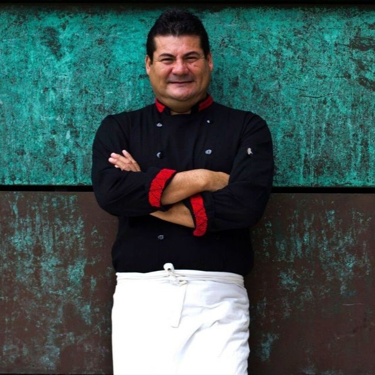
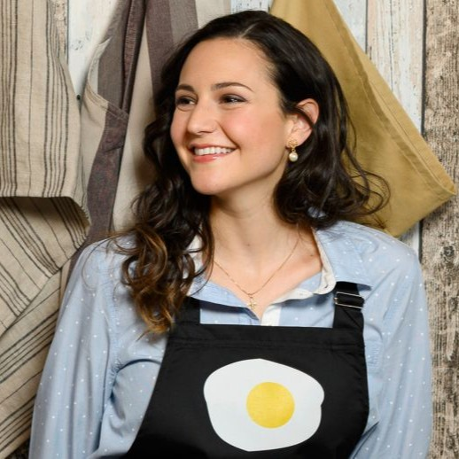

Te invitamos a conocer a nuestros expertos de la cocina, chefs de todas partes del mundo
-
 Alejandra Magana
Es es periodista y presentadora de televisión especializada en política y gastronomía. Nació en Guanajuato, México, y esde los 12 años ha estado incursionado en la televisión de ese estado.
-
 Alex Ruiz Olmedo
Alejandro Ruiz es un cocinero comúnmente llamado embajador de la cocina oaxaqueña. En 1997 creó el concepto gastronómico Casa Oaxaca, dentro de un hotel boutique con el mismo nombre. En el año 2003 abre un segundo restaurante Casa Oaxaca El Restaurante, un lugar de referencia para el turismo que visita su ciudad.
-
 Andrea Dopico
Aunque tiene raíces españolas, Andrea Dopico nació en Caracas (Venezuela) en 1991. Descubrió su vocación por la pastelería muy temprano, pero tuvieron que pasar años hasta que se introdujese en el mundo de la gastronomía